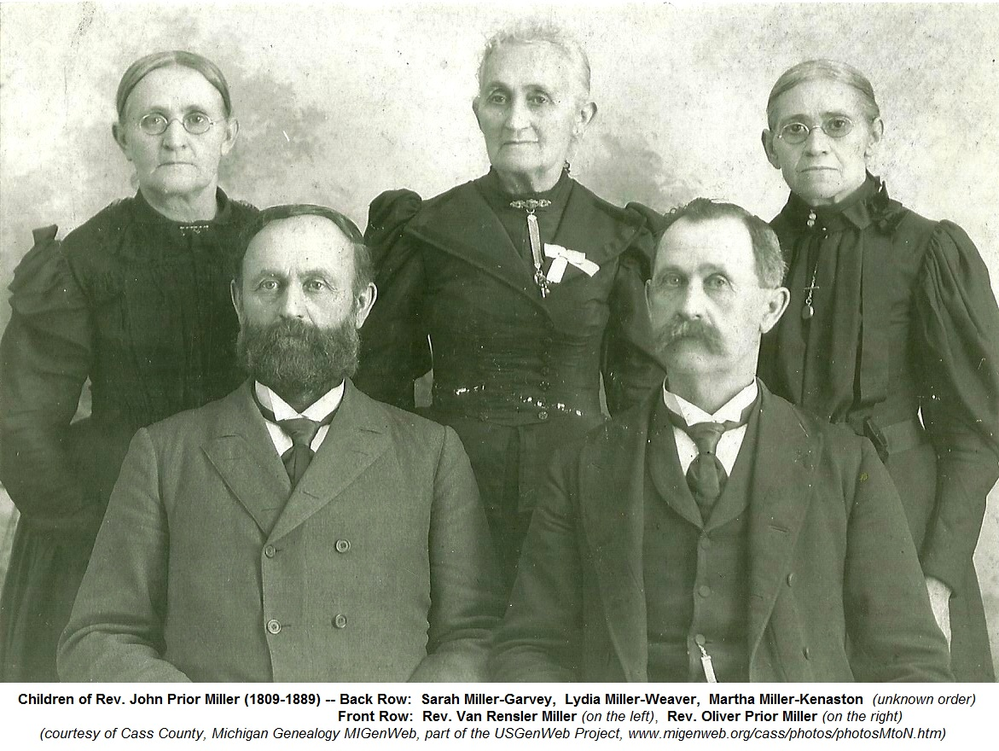
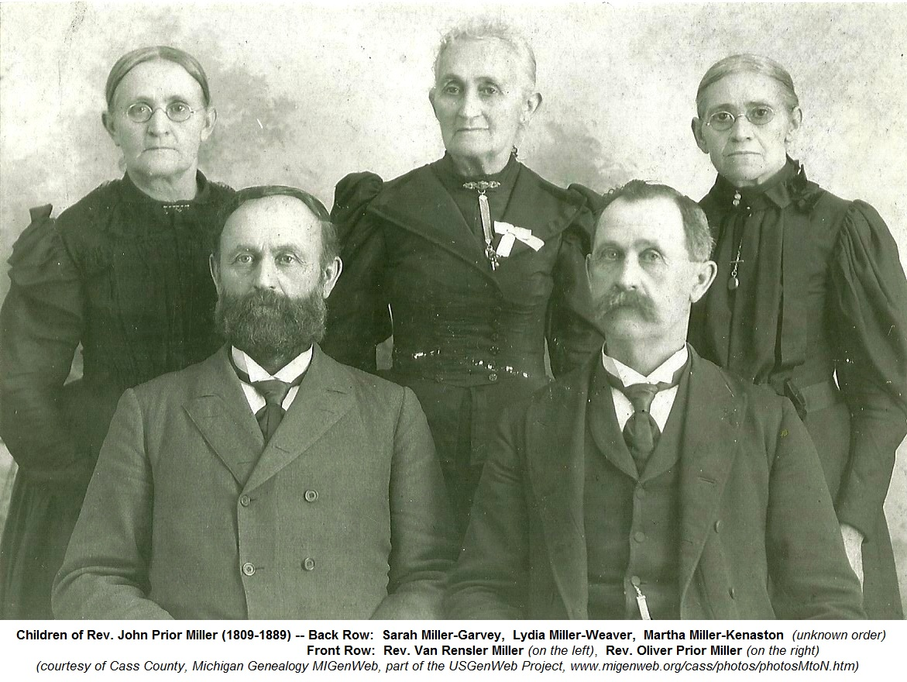

Lydia MILLER 1 2 3
- Born: Nov 8, 1835, Jefferson Township, Cass County, Michigan
- Marriage: Levi WEAVER on Jun 20, 1855 in Edwardsburg, Cass County, Michigan
- Died: Sep 14, 1898, Shelby, Oceana County, Michigan at age 62 4

 Research Notes: Research Notes:
-- Ancestry.com (http://trees.ancestry.com/owt/person.aspx?pid=133329839)
-- Cass County MIGenWeb, part of The USGenWeb Project (www.migenweb.org/cass)
-- Photo courtesy of Cass County, Michigan Genealogy MIGenWeb, part of the USGenWeb Project (www.migenweb.org/cass/photos/photosMtoN.htm)
Lydia married Levi WEAVER on Jun 20, 1855 in Edwardsburg, Cass County, Michigan. (Levi WEAVER was born on Jan 20, 1834 in Montgomery County, New York and died in Michigan.)
|

") 
